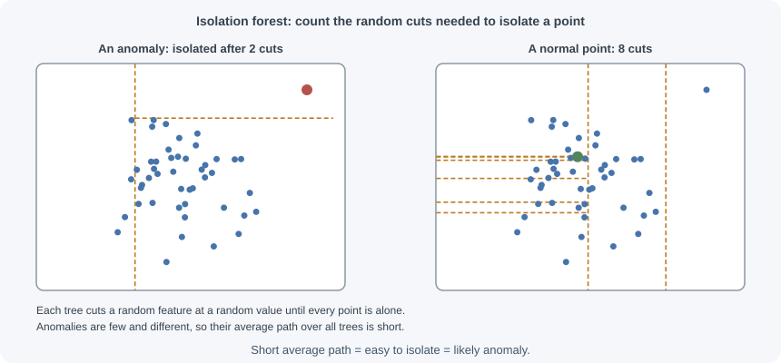

Time Series and Anomaly Detection¶
A time series is a sequence of measurements in time order: requests per hour, tasks created per day, error rate per minute. Order changes everything. Yesterday predicts today, the same hour last week predicts this hour, and a random split of the rows leaks the future into training.
This lesson covers both halves of working with time series in a product like TaskFlow. Forecasting: trend and seasonality, baselines that are hard to beat, lag features for gradient boosting, prediction intervals, and backtesting from rolling origins. Anomaly detection: static thresholds, rolling and seasonal z-scores, robust statistics, and isolation forests, judged by the incidents they catch and the false alarms they raise. Evaluation basics come from model evaluation and validation; alerting practice from alerting and on-call.
Why it matters¶
TaskFlow runs on numbers that move in time. Capacity planning needs next week's peak traffic per hour; the daily digest job needs to know when queues are quiet; finance wants next quarter's active workspaces. On the operations side, an alert should fire when error rates or latency go wrong, without paging anyone for the ordinary afternoon peak.
Both jobs are easy to do badly. A forecast that ignores the calendar predicts a normal Monday on a public holiday; a detector that ignores the daily cycle alerts every morning at 08:00. The methods on this page are simple, explainable, and cheap to run, which is why they remain the backbone of forecasting and monitoring even in teams that use large models elsewhere.
Real-world usage¶
- Netflix: anomalies in data with seasonality. The 2015 post RAD: Outlier Detection on Big Data describes datasets growing by more than 10 billion records a day, notes that hourly, weekly, and monthly seasonal effects can be mistaken for outliers, and explains Netflix's choice of Robust Principal Component Analysis to separate a low-rank pattern, noise, and outliers.
- Twitter's AnomalyDetection package. The open-source AnomalyDetection R package uses Seasonal Hybrid ESD, built on the generalized ESD test, to find anomalies in the presence of seasonality and trend, for example in system metrics after a release. The repository was archived in November 2021.
- Isolation Forest. Liu, Ting, and Zhou, Isolation Forest (ICDM 2008), observe that anomalies are "few and different", so random partitioning isolates them with shorter paths. The method has linear time complexity and uses small sub-samples; 256 points per tree is the default in the paper and in scikit-learn.
- Scaled errors for forecasts. Hyndman and Koehler, Another look at measures of forecast accuracy (2006), show that percentage errors become infinite or undefined when actual values are zero or close to it, and propose the mean absolute scaled error (MASE) as a standard measure.
- Backtesting. Rob Hyndman's note on cross-validation for time series describes evaluation on a rolling forecasting origin, where accuracy is averaged over a series of test sets that each lie after their training data.
Popular tools and providers: pandas for resampling and lags,
statsmodels (exponential smoothing, ARIMA, STL), Prophet, Nixtla
StatsForecast, Darts, sktime, LightGBM and XGBoost with lag features,
scikit-learn's IsolationForest; in operations, Prometheus and Grafana
alert rules, Datadog anomaly monitors, and Elastic machine learning
anomaly detection.
How it works¶
Trend, seasonality, and the calendar¶
Most business series combine a few parts:
| Component | TaskFlow example | How to handle it |
|---|---|---|
| Level and trend | Traffic grows about 0.4% a week | Model a ratio to a recent level, or difference the series |
| Daily seasonality | Busy afternoons, quiet nights | Hour-of-day features, or compare with the same hour |
| Weekly seasonality | Weekends at about a third of weekday traffic | Day-of-week features, weekly lags |
| Calendar events | Public holidays, end of quarter | Known future flags: holidays are in the calendar before they happen |
| Noise | Random variation around the pattern | Measure it; forecast intervals, not only points |
| Breaks | A launch, a pricing change, an outage | Mark them; exclude or model them explicitly |
![Diagram: hourly TaskFlow API requests for two weeks, Monday 31 August to Sunday 13 September 2026. Weekdays peak near 2,400 requests per hour in the afternoon and fall to about 500 at night; weekends are much quieter. The forecast origin is Monday 7 September, a public holiday shaded in orange, when traffic stayed low all day. The seasonal naive forecast copies the previous week and predicts a normal Monday peak, so its error for the week is 164 requests per hour; the LightGBM forecast, which knows the holiday calendar, follows the low Monday and the normal days after it, with an error of 50.](../traffic-forecast-holiday.svg)
The period of a seasonal pattern sets the most useful lag: with hourly data and a weekly cycle, the value 168 hours ago is the same hour on the same weekday. Look at the data before modelling: plot several weeks, the average for each hour of the week, and the outliers.
Baselines that are hard to beat¶
| Baseline | Forecast | Strength |
|---|---|---|
| Naive | The last observed value, repeated | Fine for random walks; terrible with seasonality |
| Seasonal naive | The value one season ago (168 hours earlier) | Very strong for stable weekly patterns |
| Seasonal mean | The average of the same hour over the last k weeks | Smooths noise; slower to follow change |
| Drift | The last value plus the average past change | Captures trend |
On the TaskFlow traffic, the naive forecast is wrong by 785 requests per hour on average, the seasonal naive by 119, and a four-week seasonal mean by 85. A model has to beat 85 to be worth running.
Forecasting with gradient boosting¶
Tree models do not know about time; they learn from features. A forecasting table has one row per timestamp, the value to predict as the target, and features that are known at the forecast origin:
- Lags: the value h hours ago, where h is at least the forecast horizon. To forecast a whole week at once (the direct strategy), use lags of 168 hours or more; shorter lags would need values that do not exist yet.
- Rolling statistics of lags: the mean of the same hour over four weeks.
- Calendar features: hour of the week, holidays, and whether last week's value was a holiday.
- Known future inputs: planned campaigns or releases.
Two practical rules. Trees cannot extrapolate beyond the target values they saw, so predict a ratio to a recent level (this hour divided by its four-week mean) rather than the raw count when the series trends. And a recursive strategy (predict one step, feed it back as a lag) is an alternative that compounds its own errors; direct forecasting with long lags is simpler to get right.
Prediction intervals matter as much as the point forecast. Capacity
planning sizes for the upper end, not the middle. LightGBM's
objective="quantile" with alpha=0.1 and alpha=0.9 gives an 80%
interval; check its coverage in the backtest: about 80% of actual
values should fall inside it.
Backtesting from rolling origins¶
A forecast is tested the way it will be used: train on everything before an origin, forecast the next horizon, score it, move the origin forward, and repeat. Average the errors over origins, and read the worst one.
![Diagram: a rolling-origin backtest over 20 weeks of hourly TaskFlow traffic, one cell per week from 4 May to 14 September 2026. The first four weeks are warm-up for four-week lag features. Four forecasts are made from Monday origins on 24 August, 31 August, 7 September (a holiday), and 14 September; each trains on all earlier weeks and forecasts the next 168 hours, so the training window grows by one week per row. Mean absolute errors in requests per hour for seasonal naive and LightGBM: 72.6 and 55.0; 73.3 and 65.6; 163.6 and 49.8 in the holiday week; and 168.4 and 60.0 in the week after it, when the seasonal naive forecast copies the holiday dip. The means are 119.4 and 57.6.](../backtest-rolling-origin.svg)
Backtesting rules:
- No future in the features. Every lag and rolling window must end
before the origin; build them with
shift, never with centered windows. - Match the horizon. If the business forecasts a week ahead, score one-week-ahead errors, not one-hour-ahead ones.
- Include special periods. Holidays, launches, and outages are where forecasts fail and where the backtest teaches the most.
- Scale-free errors for comparing series. MAE is in requests per hour; MASE divides it by the in-sample error of a seasonal naive forecast, so values below 1 mean "better than seasonal naive" on any series. Avoid MAPE when values can be zero or near zero.
scikit-learn's TimeSeriesSplit implements expanding-window splits for
cross-validation, with gap to leave rows out between training and test.
Anomaly detection basics¶
An anomaly is a point or a period that does not fit the expected pattern. Three kinds matter in operations:
| Kind | TaskFlow example | Needs |
|---|---|---|
| Point | Error rate jumps from 0.5% to 6% | Any detector |
| Contextual | 500 requests in 5 minutes at 03:00 (normal at 14:00) | A notion of "normal for this time" |
| Collective or multivariate | Normal traffic and errors, but p95 latency triples at night | Several metrics together |
Labels are rare, so detectors are usually unsupervised, and their evaluation borrows from classification: of the incidents you know about, how many did it catch (recall), and how many alerts were noise (precision, or false alarms per week). Alert fatigue is a real cost: people stop reading alerts that are usually wrong.
Thresholds and z-scores¶
- Static thresholds ("errors above 5%") are precise and explainable, and blind to everything their author did not anticipate.
- Rolling z-score:
(x - mean of the last hour) / standard deviation of the last hour. It adapts to level changes but treats the daily ramp as an anomaly and lets slow drifts pass. - Seasonal z-score: compare each point with the same 5-minute slot on normal days, then scale the difference. This removes the daily cycle.
- Robust statistics: the median and the median absolute deviation
(MAD) replace the mean and standard deviation, so past incidents do not
inflate the baseline.
0.6745 x (x - median) / MADis comparable to a z-score for normally distributed data. - Scale per period: busy hours vary more in absolute terms than quiet ones, so estimate the spread separately for each hour of the day.
![Diagram: three days of 5-minute TaskFlow API request counts, Thursday 15 to Saturday 17 October 2026. A green band shows the expected range for each 5-minute slot, the median of the same slot in a normal week plus or minus five robust standard deviations for that hour, narrow at night and wide in the afternoon. The traffic line stays inside the band except during two incidents, which the seasonal robust z-score flags with red dots: a partial outage on Thursday at 11:00, when requests drop to about a third, and bot traffic on Saturday at 03:00, when night traffic triples.](../anomaly-seasonal-band.svg)
Isolation forests¶
An isolation forest builds many random trees. Each tree samples up to 256 points, picks a random feature and a random split value between that feature's minimum and maximum, and repeats until every point is alone. Anomalies, being few and different, are isolated after few cuts, so a short average path length means a high anomaly score.

What to know before using one:
- Feed it deseasonalized features. On raw metrics plus time of day it learns the daily cycle poorly; on seasonal z-scores of each metric it sees "unusual combinations" directly.
contaminationsets the alarm rate. It is the share of training points the threshold treats as anomalous ("auto"uses the original paper's threshold). It is a budget, not a property of the data.- Scores saturate outside the training range. A tree can only split between values it saw, so a point far beyond the training data is isolated about as quickly as the most extreme training point. Fitting on a quiet history and scoring new data can therefore rank a huge spike no higher than an ordinary edge case. Refitting on the recent window and flagging its most isolated points avoids this, at the cost of letting a long incident shape its own baseline.
- Explaining an alert is harder than with a z-score, so report which metric's z-score was largest next to the forest's score.
When to use and when not to use¶
| Situation | Approach |
|---|---|
| A stable weekly pattern, short horizon | Seasonal naive or seasonal mean; often enough |
| Calendar effects, many related series, extra inputs | Gradient boosting with lags and calendar features |
| Few series, need intervals and interpretability | Exponential smoothing or ARIMA (statsmodels, StatsForecast) |
| A hard limit that must never be crossed (error budget, disk full) | Static threshold or SLO burn-rate alert |
| One metric with daily and weekly cycles | Seasonal robust z-score |
| Several metrics where combinations matter | Isolation forest on deseasonalized features |
| A metric with no regular pattern and frequent breaks | Simple thresholds plus human review; models will chase noise |
Do not forecast (yet) when the series is only a few weeks long, when the process is about to change (a pricing launch), or when the decision would be the same whatever the forecast says. Do not page anyone from an anomaly detector whose false alarm rate you have not measured; start with a dashboard or a ticket.
Practical examples¶
Tested with Python 3.12, pandas 3.1.1, scikit-learn 1.9.1, and LightGBM 4.7.0 in November 2026; all data is synthetic.
Synthetic hourly traffic¶
# ml/make_requests.py: synthetic hourly TaskFlow API traffic with daily and weekly seasonality
from pathlib import Path
import numpy as np
import pandas as pd
rng = np.random.default_rng(21)
hours = pd.date_range("2026-05-04", periods=20 * 168, freq="h") # 20 weeks, Monday start
h, dow = hours.hour.to_numpy(), hours.day_of_week.to_numpy()
daily = 0.25 + 0.75 * np.exp(-((h - 14) / 4.5) ** 2) # busy afternoons (UTC)
weekly = np.where(dow >= 5, 0.35, 1.0) # quiet weekends
trend = 1 + 0.004 * np.arange(len(hours)) / 168 # +0.4% per week
holidays = pd.to_datetime(["2026-07-03", "2026-09-07"]) # observed holidays
holiday = np.isin(hours.normalize(), holidays)
level = 2400 * daily * weekly * trend * np.where(holiday, 0.4, 1.0)
requests = np.round(level * rng.lognormal(0, 0.06, len(hours)))
traffic = pd.DataFrame({"hour": hours, "requests": requests.astype(int), "holiday": holiday})
Path("data").mkdir(exist_ok=True)
traffic.to_csv("data/requests.csv", index=False)
weekly_totals = traffic.set_index("hour")["requests"].resample("W-SUN").sum()
print(traffic.shape, "first weekly totals:", ", ".join(f"{v:,}" for v in weekly_totals.iloc[:4]))
$ python make_requests.py
(3360, 3) first weekly totals: 164,624, 164,033, 166,680, 166,779
Lag features and a rolling-origin backtest¶
# ml/forecast.py: baselines vs LightGBM on lag features, backtested from four forecast origins
import lightgbm as lgb
import numpy as np
import pandas as pd
H = 168 # horizon: the next week, hour by hour
df = pd.read_csv("data/requests.csv", parse_dates=["hour"])
df["how"] = df["hour"].dt.day_of_week * 24 + df["hour"].dt.hour # hour of the week, 0-167
for k in (1, 2, 3, 4): # the same hour 1 to 4 weeks earlier
df[f"lag_{k}w"] = df["requests"].shift(k * H)
df["mean_4w"] = df[[f"lag_{k}w" for k in (1, 2, 3, 4)]].mean(axis=1)
df["holiday_1w"] = df["holiday"].shift(H, fill_value=False) # last week was a holiday
df["lag_1w_ratio"] = df["lag_1w"] / df["mean_4w"]
df["ratio"] = df["requests"] / df["mean_4w"] # target: this hour vs its 4-week mean
FEATURES = ["how", "holiday", "holiday_1w", "lag_1w_ratio"] # all known a week ahead
def model(**extra):
return lgb.LGBMRegressor(n_estimators=300, learning_rate=0.05, num_leaves=15,
min_child_samples=10, verbose=-1, **extra)
def mae(a, b):
return float(np.mean(np.abs(a - b)))
rows = []
for origin in pd.date_range("2026-08-24", periods=4, freq="7D"): # rolling origin
train = df[(df["hour"] < origin) & df["mean_4w"].notna()]
test = df[(df["hour"] >= origin) & (df["hour"] < origin + pd.Timedelta(hours=H))]
y = test["requests"].to_numpy()
last_value = df.loc[df["hour"] < origin, "requests"].iloc[-1]
fit = lambda **kw: model(**kw).fit(train[FEATURES], train["ratio"]).predict(test[FEATURES])
point = fit() * test["mean_4w"].to_numpy()
low, high = (fit(objective="quantile", alpha=a) * test["mean_4w"].to_numpy() for a in (0.1, 0.9))
scale = mae(train["requests"], train["lag_1w"]) # in-sample seasonal naive error, for MASE
rows.append({"origin": origin.date(), "naive": mae(y, last_value),
"seasonal naive": mae(y, test["lag_1w"]), "4-week mean": mae(y, test["mean_4w"]),
"LightGBM": mae(y, point), "MASE": mae(y, point) / scale,
"80% interval hit": np.mean((y >= low) & (y <= high))})
result = pd.DataFrame(rows).set_index("origin")
print("MAE in requests per hour, one week ahead:")
print(result.round(2).to_string())
print("mean:", ", ".join(f"{k} {v:.1f}" for k, v in result.mean().items() if k not in ("MASE", "80% interval hit")))
$ python forecast.py
MAE in requests per hour, one week ahead:
naive seasonal naive 4-week mean LightGBM MASE 80% interval hit
origin
2026-08-24 798.67 72.58 52.60 55.02 0.70 0.75
2026-08-31 795.64 73.29 61.05 65.58 0.83 0.72
2026-09-07 726.10 163.57 151.78 49.75 0.64 0.78
2026-09-14 818.13 168.36 73.26 60.04 0.72 0.82
mean: naive 784.6, seasonal naive 119.4, 4-week mean 84.7, LightGBM 57.6
What the backtest shows:
- In ordinary weeks the four-week mean is as good as the model (52.6 and 61.1 against 55.0 and 65.6). A forecasting model has to earn its keep.
- The holiday week is where the model wins: 49.8 against 151.8,
because
holidayis known in advance and the model learned from the 3 July holiday what a holiday hour looks like. - The week after the holiday breaks the seasonal naive forecast (168.4):
it copies last Monday's dip. The
holiday_1wfeature tells the model to discount that lag. - MASE below 1 in every fold means LightGBM beats the in-sample seasonal naive error everywhere; the 80% interval covered 72-82% of hours, close to its target.
- Every feature is shifted by at least 168 hours, so the whole week can be forecast at the origin without recursion.
Synthetic monitoring metrics with known incidents¶
# ml/make_metrics.py: synthetic 5-minute TaskFlow API metrics for two weeks, with four incidents
from pathlib import Path
import numpy as np
import pandas as pd
rng = np.random.default_rng(8)
t = pd.date_range("2026-10-05", periods=14 * 288, freq="5min") # 14 days, 288 points a day
hod = (t.hour + t.minute / 60).to_numpy()
load = 0.2 + 0.8 * np.exp(-((hod - 14) / 4.5) ** 2) # daily traffic shape
requests = rng.poisson(900 * load) # requests per 5 minutes
error_rate = np.clip(rng.normal(0.005, 0.0015, len(t)), 0, None)
p95_ms = 110 + 60 * load + rng.normal(0, 6, len(t)) # slower when busy
incidents = { # start, minutes, what breaks
"error spike": ("2026-10-12 14:00", 30), "slow at night": ("2026-10-14 02:00", 60),
"partial outage": ("2026-10-15 11:00", 20), "bot traffic": ("2026-10-17 03:00", 30),
}
label = np.zeros(len(t), dtype=object)
for name, (start, minutes) in incidents.items():
m = (t >= start) & (t < pd.Timestamp(start) + pd.Timedelta(minutes=minutes))
label[m] = name
if name == "error spike":
error_rate[m] = rng.normal(0.06, 0.01, m.sum())
elif name == "slow at night":
p95_ms[m] = rng.normal(330, 20, m.sum()) # traffic and errors normal
elif name == "partial outage":
requests[m] = (requests[m] * 0.3).astype(int)
else:
requests[m] = requests[m] * 3
metrics = pd.DataFrame({"time": t, "requests": requests, "error_rate": error_rate.round(4),
"p95_ms": p95_ms.round(1), "incident": np.where(label == 0, "", label)})
Path("data").mkdir(exist_ok=True)
metrics.to_csv("data/metrics.csv", index=False)
print(metrics.shape, "incident points:", int((metrics["incident"] != "").sum()))
$ python make_metrics.py
(4032, 5) incident points: 28
The first week is clean and serves as history; the second week contains four incidents of different kinds: a point anomaly (error spike), a multivariate one (latency triples at night while traffic and errors look normal), a drop (partial outage), and a contextual one (afternoon-level traffic at 03:00).
Four detectors, scored against the incidents¶
# ml/detect.py: four anomaly detectors on the same metrics, scored against the known incidents
import numpy as np
import pandas as pd
from sklearn.ensemble import IsolationForest
df = pd.read_csv("data/metrics.csv", parse_dates=["time"]).fillna({"incident": ""})
df["slot"] = df["time"].dt.hour * 12 + df["time"].dt.minute // 5 # 5-minute slot of the day
hour = df["time"].dt.hour
history = df["time"] < "2026-10-12" # first week: assumed normal
METRICS = ["requests", "error_rate", "p95_ms"]
def rolling_z(s, window=12):
"""z-score against the previous hour only: ignores the daily cycle."""
past = s.shift(1).rolling(window)
return (s - past.mean()) / past.std()
def seasonal_robust_z(col):
"""Gap from the same 5-minute slot in the history week, scaled by a robust spread per hour."""
resid = df[col] - df["slot"].map(df[history].groupby("slot")[col].median())
by_hour = resid[history].groupby(hour[history])
center = by_hour.median()
mad = by_hour.apply(lambda r: np.median(np.abs(r - r.median()))) # median absolute deviation
return 0.6745 * (resid - hour.map(center)) / hour.map(mad)
z = pd.DataFrame({c: seasonal_robust_z(c) for c in METRICS})
flags = {
"static: errors > 5%": df["error_rate"] > 0.05,
"rolling z > 4": pd.concat([rolling_z(df[c]).abs() > 4 for c in METRICS], axis=1).any(axis=1),
"seasonal robust z > 5": (z.abs() > 5).any(axis=1),
}
# Isolation forest on the three z-scores, two ways: trained on the quiet week and scoring new
# points, or refitted on the whole window and flagging its most isolated 0.5%.
streaming = IsolationForest(n_estimators=200, contamination=0.002, random_state=0).fit(z[history])
flags["forest, fit on history"] = pd.Series(streaming.predict(z) == -1, index=df.index)
batch = IsolationForest(n_estimators=200, contamination=0.005, random_state=0)
flags["forest, refit on window"] = pd.Series(batch.fit_predict(z) == -1, index=df.index)
test = ~history
incidents = [i for i in df["incident"].unique() if i]
print(f"{'detector':24} " + " ".join(f"{i[:14]:>14}" for i in incidents) + " false alarms")
for name, f in flags.items():
caught = ["yes" if f[test & (df["incident"] == i)].any() else "-" for i in incidents]
false = f[test & (df["incident"] == "")]
alarms = int((false & ~false.shift(1, fill_value=False)).sum()) # count alarm episodes
print(f"{name:24} " + " ".join(f"{c:>14}" for c in caught) + f" {alarms:12}")
$ python detect.py
detector error spike slow at night partial outage bot traffic false alarms
static: errors > 5% yes - - - 0
rolling z > 4 yes yes yes yes 19
seasonal robust z > 5 yes yes yes yes 5
forest, fit on history - yes yes yes 5
forest, refit on window yes yes yes yes 1
Reading the scoreboard (false alarms are separate alert episodes during the incident week):
- The static threshold never cries wolf and misses three incidents of four.
- The rolling z-score catches everything but raises 19 false alarms in a week, mostly on daily ramps and noisy metrics: a pager nobody would trust.
- The seasonal robust z-score catches all four with 5 false alarms. Comparing with the same slot on a normal day, and scaling per hour, does most of the work.
- The isolation forest fitted on the quiet week misses the error spike: its error-rate z-score is far outside anything in training, and the forest's scores saturate at the edge of the training data.
- The forest refitted on the whole window catches all four with one false alarm, flagging the 0.5% most isolated points. In production that means refitting on a sliding window (for example the last 14 days) on a schedule, and accepting that a very long incident can hide itself.
contamination and the z threshold are the real tuning knobs: each one
trades missed incidents for false alarms. Tune them on a labelled incident
history, then review the alerts for a few weeks before paging anyone.
Best practices¶
- Plot the series, its seasonal profile, and its outliers before choosing a method.
- Start every forecast with naive, seasonal naive, and seasonal mean baselines; keep the model only if the backtest beats them clearly.
- Use only features known at the forecast origin; for a direct week-ahead forecast, every lag must be at least 168 hours old.
- Encode the calendar: holidays, the day after holidays, and known events.
- Backtest from several rolling origins, at the real horizon, including special periods; report the mean and the worst origin.
- Forecast intervals, check their coverage, and plan capacity from the upper quantile.
- For detection, remove seasonality first and use robust statistics (median and MAD) estimated on normal history.
- Measure detectors on known incidents: incidents caught, false alarms per week, and time to detect.
- Route new detectors to dashboards or tickets until their false alarm rate is known; page only on symptoms users feel (see SLIs, SLOs, and error budgets).
- Retrain or refit on a schedule and after known breaks.
In production¶
- The forecast is badly wrong on holidays and the week after. Detect: backtest errors spike around holidays; capacity alerts fire on a quiet day. Cause: seasonal lags copy last year's or last week's pattern without knowing the calendar. Fix: holiday and "holiday last week" features, an explicit holiday table per region, and a backtest origin on every holiday.
- The forecast lags behind a step change. Detect: errors have the same sign for days after a launch or a migration. Cause: rolling means and lags still describe the old level. Fix: model a ratio to a short recent level, add a changepoint feature, or restart the history at the break; mark known breaks in the data.
- The anomaly detector pages every morning. Detect: alerts cluster at the same time of day on normal days. Cause: a rolling window or global threshold that ignores daily seasonality. Fix: seasonal baselines per time slot, spread estimated per hour, and a higher threshold or a minimum duration before alerting.
- A real outage did not alert. Detect: the incident review finds no alert, or one that fired an hour late. Cause: the baseline absorbed the incident (a long window, or a model refitted during the outage), or the detector watched the wrong metric. Fix: robust statistics on a clean history, alerts on user-facing symptoms, and a replay of past incidents in CI for every detector change.
- The baseline quietly moved after an incident. Detect: after an outage, ordinary traffic triggers alerts, or a recurring problem stops triggering them. Cause: incident data entered the history used for medians and spreads. Fix: exclude labelled incident windows from the baseline, and keep the baseline window versioned.
- Forecast intervals are far too narrow. Detect: coverage in production is well below the nominal 80% or 95%. Cause: intervals fitted in-sample, or regime changes not seen in the backtest. Fix: quantile models or conformal intervals calibrated on backtest errors, and coverage monitored over time.
Important terminology¶
- Time series: Measurements ordered in time at a regular interval.
- Seasonality: A pattern that repeats with a fixed period (daily, weekly).
- Trend: A long-term change in level.
- Horizon: How far ahead a forecast predicts.
- Forecast origin: The point in time a forecast is made from.
- Lag feature: A past value of the series used as an input.
- Seasonal naive: Forecasting each point with the value one season earlier.
- Direct and recursive forecasting: Predicting each horizon from known lags, or feeding predictions back as inputs.
- Backtesting: Simulating past forecasts from rolling origins and scoring them.
- MASE: Mean absolute scaled error, the MAE divided by a naive forecast's in-sample MAE.
- Prediction interval: A range expected to contain the actual value with a stated probability.
- Anomaly: A point or period that does not fit the expected pattern.
- Robust z-score: A z-score based on the median and the median absolute deviation.
- Isolation forest: An ensemble of random trees that scores points by how quickly they are isolated.
- Contamination: The expected share of anomalies, which sets an isolation forest's threshold.
Common mistakes and misconceptions¶
- Splitting time series randomly, or using centered rolling windows that include the future.
- Skipping the seasonal naive baseline.
- Using lags shorter than the horizon in a direct forecast.
- Reporting MAPE on series with zeros or tiny values.
- Treating holidays as noise instead of known future inputs.
- Alerting on deviations from the last hour for metrics with a daily cycle.
- Estimating baselines with means and standard deviations that past incidents inflate.
- Treating
contaminationas a fact about the data rather than an alert budget. - Paging on a new detector before measuring its false alarm rate.
Revision questions¶
- Why is the seasonal naive forecast so strong for TaskFlow traffic, and when does it fail?
- To forecast a full week at once from Monday 00:00, what is the shortest lag you can use, and why?
- Why does the forecast model predict the ratio to the four-week mean instead of the raw request count?
- A forecast has MAE 57.6 and the in-sample seasonal naive MAE is 80. What is the MASE, and what does it mean? (0.72; 28% better than seasonal naive.)
- An 80% interval contained the actual value in 60% of backtest hours. What is wrong, and how would you fix it?
- Why does a rolling one-hour z-score produce false alarms every morning?
- How do the median and MAD protect an anomaly baseline from past incidents?
- Why might an isolation forest trained on last week miss a huge error spike this week?
Further learning¶
- Rob Hyndman: Cross-validation for time series
- Hyndman and Koehler: Another look at measures of forecast accuracy
- scikit-learn: IsolationForest
- scikit-learn: Novelty and outlier detection
- LightGBM: Parameters (quantile objective)
- Next: recommender systems. Back to the machine learning foundations overview.